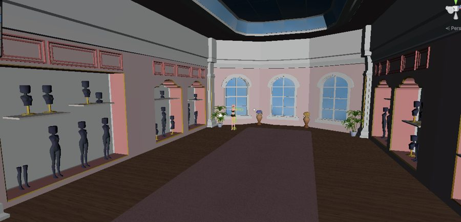

ONLINE
Let your AIwork inside Unity.
Matrix Bridge connects Claude Code, Codex, Cursor and other MCP clients to the Unity Editor on your machine. They read your scenes, change objects, run C#, play test and take screenshots while you watch.
Three pieces, all on your machine
Your AI client speaks MCP. Unity does not. Matrix sits between them: a small server the package starts for you, and an Editor plugin that runs each request inside Unity.
Your AI client
Claude Code, Codex, Cursor, Gemini, Copilot and more. You say what you want in plain words.
talks MCP over http://localhostMatrix server
Ships inside the package and starts with the Editor. Keeps answering through script reloads and tells your client when Unity is busy.
Library/feeder-matrixUnity Editor
The package runs each tool: queries, scene edits, C#, tests, play mode, screenshots. Scene changes are undoable.
Packages/com.feeder.mcpWhat a session looks like
You never call tools yourself. You describe the result; your client picks the tools, Unity runs them, and you see every step. Pick a request:
How many objects of each tag are in the scene?
Feeder-MCP - rql-query (MCP)(query: "objects | group tag")
2 rows tag | count Untagged | 1410 MainCamera | 1
1,411 objects. Everything except the camera is Untagged, so tags do not group anything here. Want a count by layer or by root object instead?
Make every enemy twice as heavy. Show me the list first.
Feeder-MCP - rql-mutate (MCP)(query: "objects | where name startswith \"Enemy\" | set Rigidbody.mass = Rigidbody.mass * 2", dryRun: true)
dry run: 12 targets, reverted Enemy_Grunt_01 Rigidbody.mass 1 -> 2 Enemy_Grunt_02 Rigidbody.mass 1 -> 2 Enemy_Brute Rigidbody.mass 4 -> 8 ... +9 more
12 enemies would change, listed above. Say go and I apply it as one undo step.
go
Feeder-MCP - rql-mutate (MCP)(query: same, dryRun: false)
12 targets changed, undo group "Matrix query"
Done. Ctrl+Z in Unity reverts all 12. The scene is marked unsaved; save it when you like the result.
Play for ten seconds and tell me what the console says.
Feeder-MCP - editor-lock-acquire (MCP)(task: "play test")
acquired
Feeder-MCP - editor-application-set-state (MCP)(isPlaying: true)
playmode: playing
Feeder-MCP - console-get-logs (MCP)(logTypeFilter: "Error")
Error x3 NullReferenceException: Object reference not set to an instance of an object
ShopPanel.Refresh () (at Assets/Scripts/UI/ShopPanel.cs:48)Feeder-MCP - editor-application-set-state (MCP)(isPlaying: false)
Feeder-MCP - editor-lock-release (MCP)
One error, three times: ShopPanel.Refresh reads its item list before Initialize fills it. Want me to fix it?
Show me the scene and tell me what looks off.
Feeder-MCP - screenshot-scene-view (MCP)(width: 1280, height: 720)

The left wall is lit but the right side is close to black: no light and no reflection probe reach it. Want me to add a fill light there?
Run the EditMode tests and fix whatever fails.
Feeder-MCP - tests-run (MCP)(testMode: "EditMode")
42 passed, 1 failed SaveDataTests.Load_OldVersion_Migrates Expected: 3 But was: 2
Feeder-MCP - script-read (MCP)(path: "Assets/Scripts/Save/SaveMigrator.cs")
Feeder-MCP - script-update-or-create (MCP)(path: "Assets/Scripts/Save/SaveMigrator.cs", ...)
updated, compiled with 0 errors
Feeder-MCP - tests-run (MCP)(testMode: "EditMode")
43 passed
Fixed: the migrator stopped at version 2 and never ran the step to 3. All 43 tests pass.
Examples of what a session prints. Tool names are the real ones; see the tool catalog.
From zero to your first answer
Four steps, about five minutes. Follow along on the right: it shows what you click and what you get back.
-
1
Install the package
In Unity, open Window > Package Manager, click +, choose Add package from git URL and paste the URL. A new Tools > Feeder > Matrix Bridge menu appears. Nothing runs yet.
Install and update -
2
Turn it on with Setup
Run Tools > Feeder > Matrix Bridge > Getting Started once on this machine. It starts the local server, links the Editor and lists every setting it changes before it changes it.
Turn Matrix on -
3
Open your client in the project
Claude Code is wired for you: start it in the project folder and approve
Connect your AI clientFeeder-MCP. Any other client takes one click in the Bridge window. -
4
Ask
Describe what you want. The Bridge window shows each tool as it runs, and every Scene view gets a green frame while your client holds the Editor.
Your first session
Everything in these docs
Press Ctrl K or / on any page to search pages and all tools.